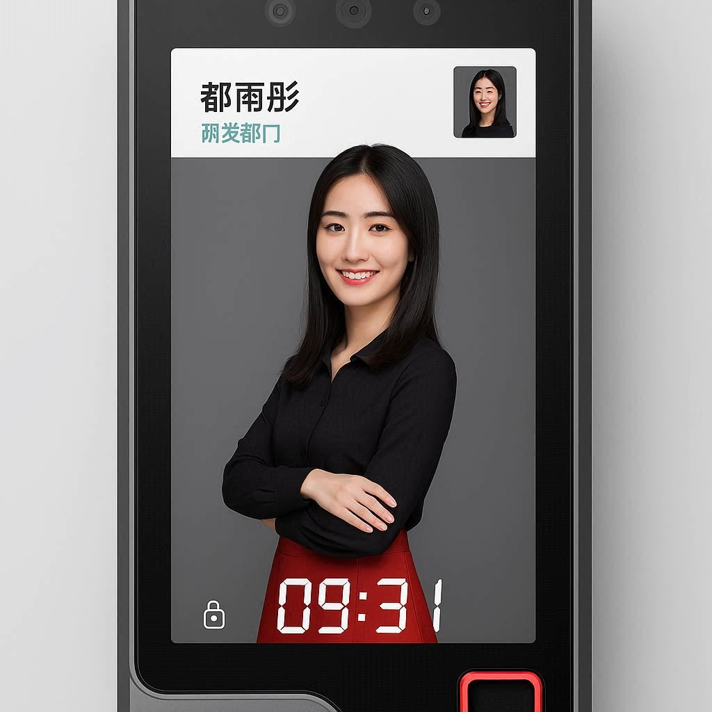
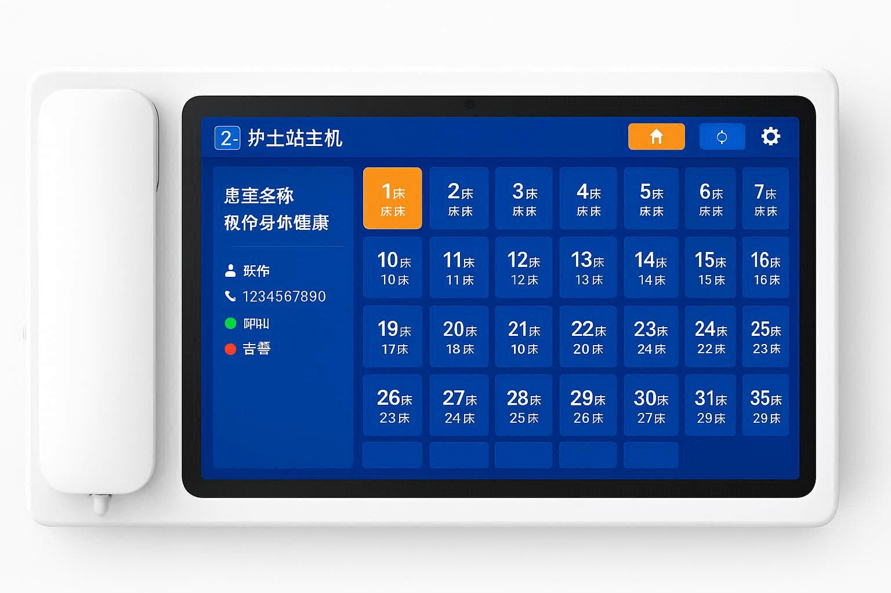
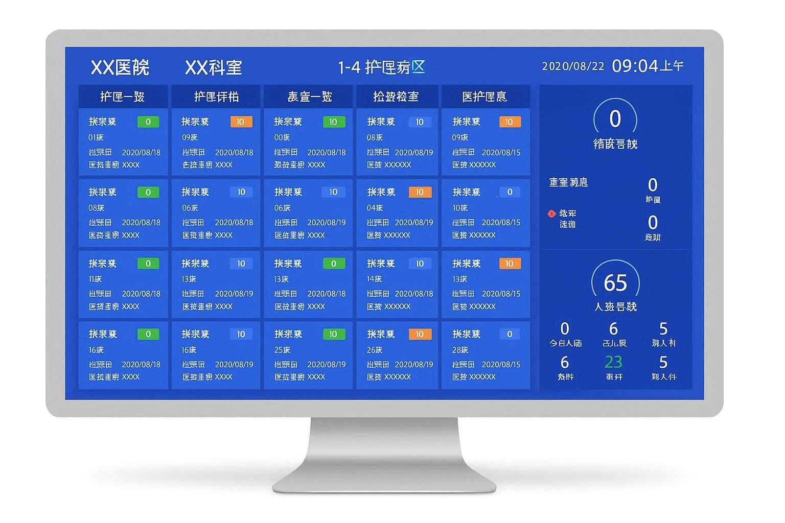

相关产品
医护对讲系统配套设备
护士站主机
医护一览表分机

护士工作站

专门用于医院住院病房的医护通讯解决方案，护士站主机与病床分机支持双向可视对讲，与医院HIS系统无缝对接，有效提高医院工作效率。
护士站主机与病床分机支持双向可视对讲，画面清晰、语音流畅，一键呼叫快速便捷，支持呼叫上传和多级管理。

与HIS系统深度对接，自动同步病人信息和护理级别，支持护理标识、费用查询、健康宣教等增值服务。

医护对讲系统配套设备
